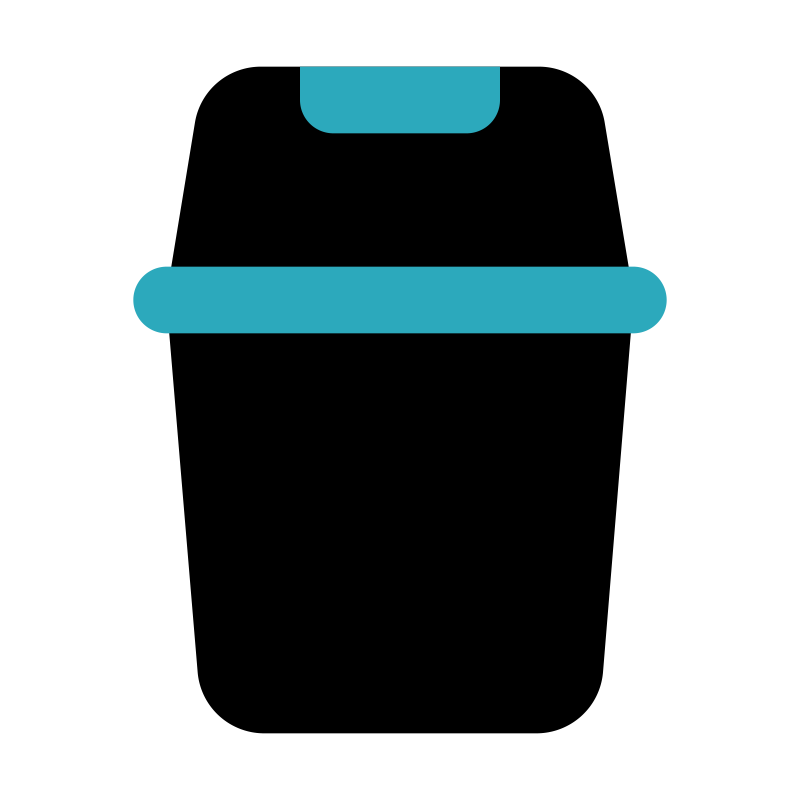

Selamat Datang di Pusat Informasi Pengelolaan Sampah Oleh Kenzie Kanendra
Website ini menyediakan panduan lengkap tentang cara mengelola berbagai jenis sampah dan limbah dengan benar. Pilih artikel yang sesuai dengan kebutuhan Anda untuk mempelajari lebih lanjut.
Pilih Artikel Panduan:
-  Pengelolaan Sampah Logam
- Pengelolaan Sampah Plastik
- Pengelolaan Limbah Berbahaya
- Pengelolaan Sampah Organik
Mengapa Pengelolaan Sampah Penting?
Pengelolaan sampah yang tepat dapat:
- Mengurangi pencemaran lingkungan
- Menghemat sumber daya alam
- Menciptakan lingkungan yang lebih sehat
- Mengurangi emisi gas rumah kaca